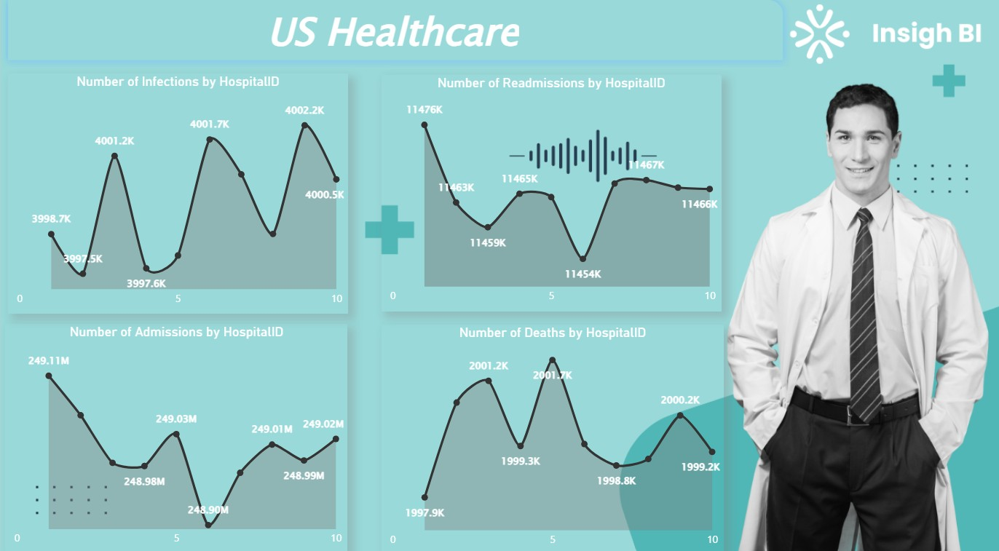
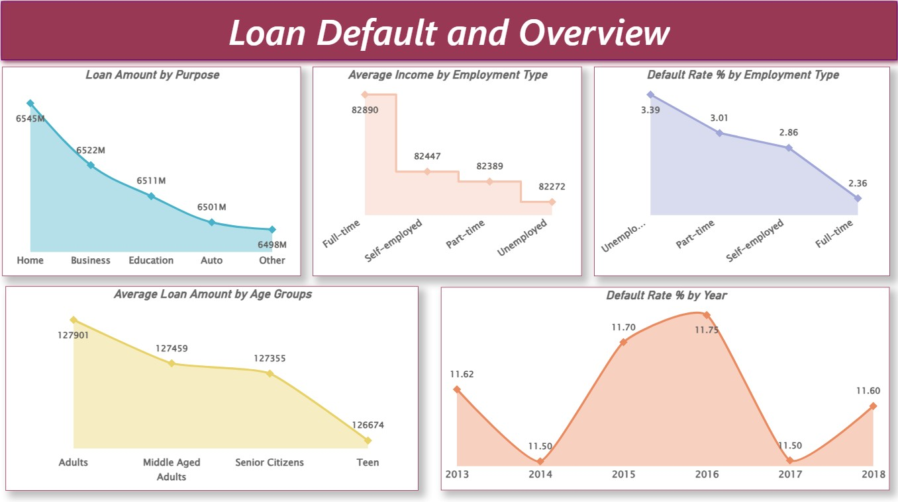
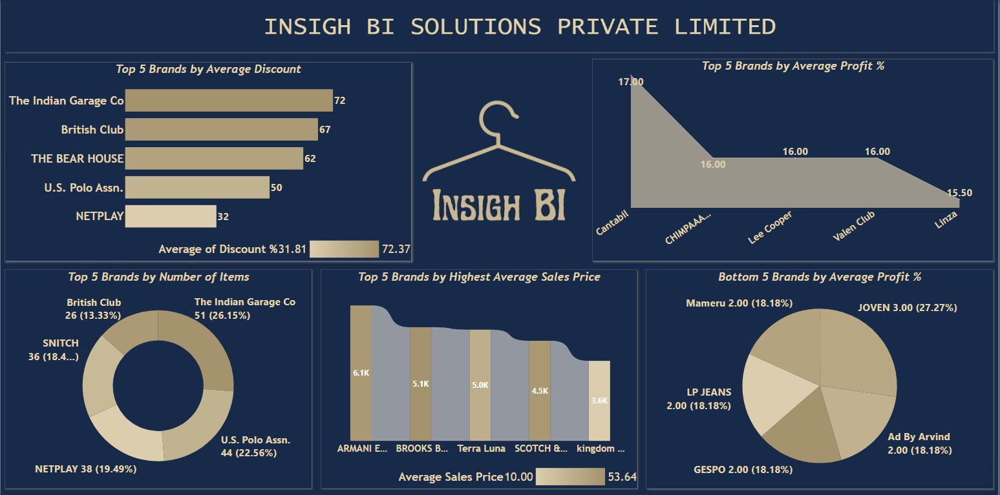
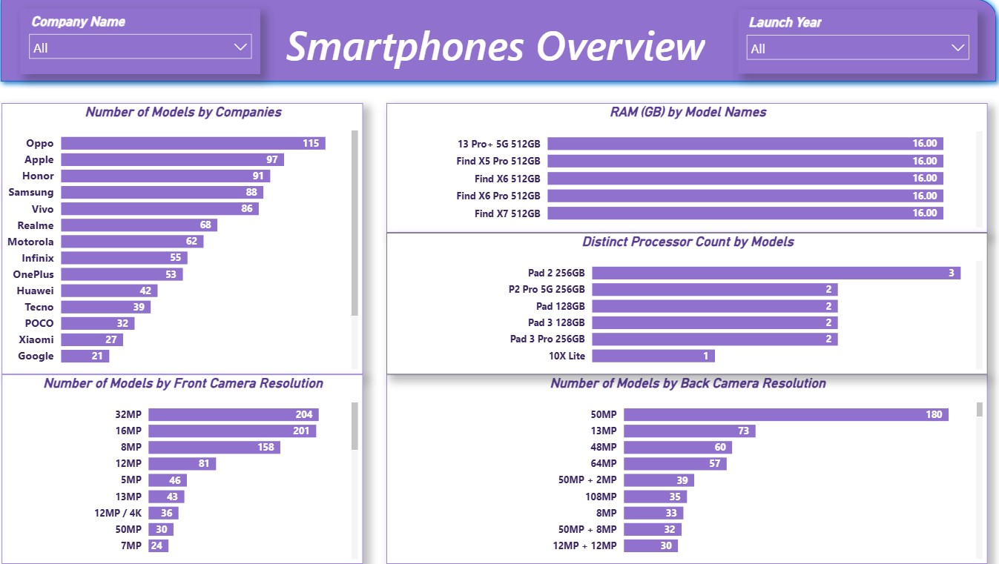
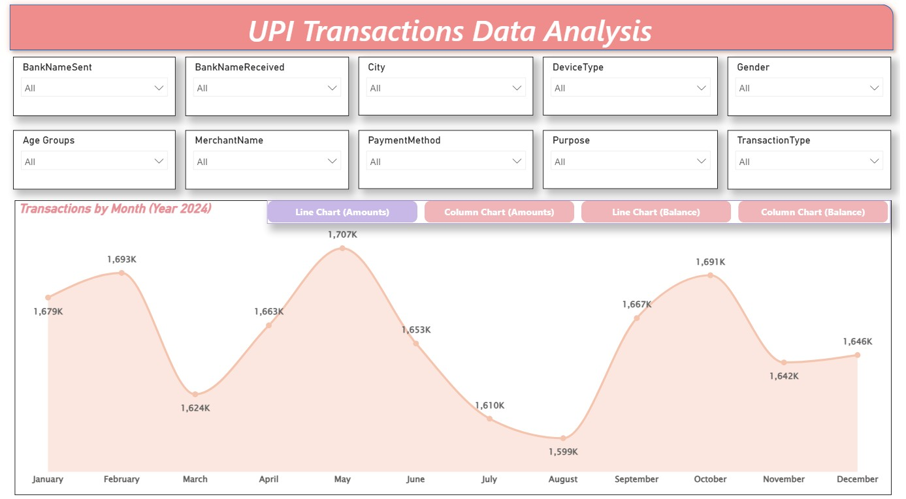
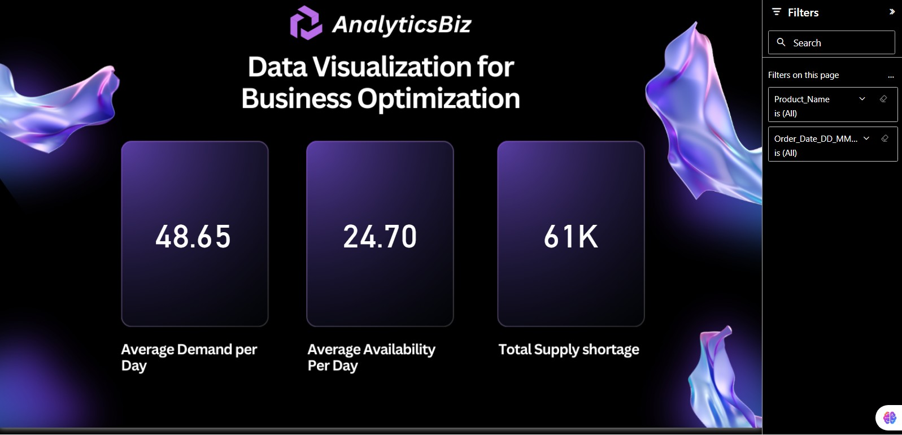

US Healthcare Performance Analytics
Hospital KPIs, admissions, readmissions and patient outcome benchmarking.
View ProjectData • Analytics • AI
Analytics & Business Intelligence Professional
Building business-focused dashboards, automation workflows, and AI-powered solutions.
I come from a Business Analysis and Transformation background, and I’m building a strong portfolio across Data Analytics, Business Intelligence, and AI solutions through practical hands-on projects.
Interactive dashboards & KPI storytelling
Data querying & business analysis
Analytics, automation & scripting
Interactive visual analytics
Predictive analytics projects
AI apps & workflow automation

Hospital KPIs, admissions, readmissions and patient outcome benchmarking.
View Project

Revenue growth, profitability and brand performance insights.
View Project


Demand planning, shortages and profitability visibility.
View ProjectUpcoming additions: SQL Case Studies • Python Analytics • Machine Learning • Generative AI Apps • Agentic AI Workflows